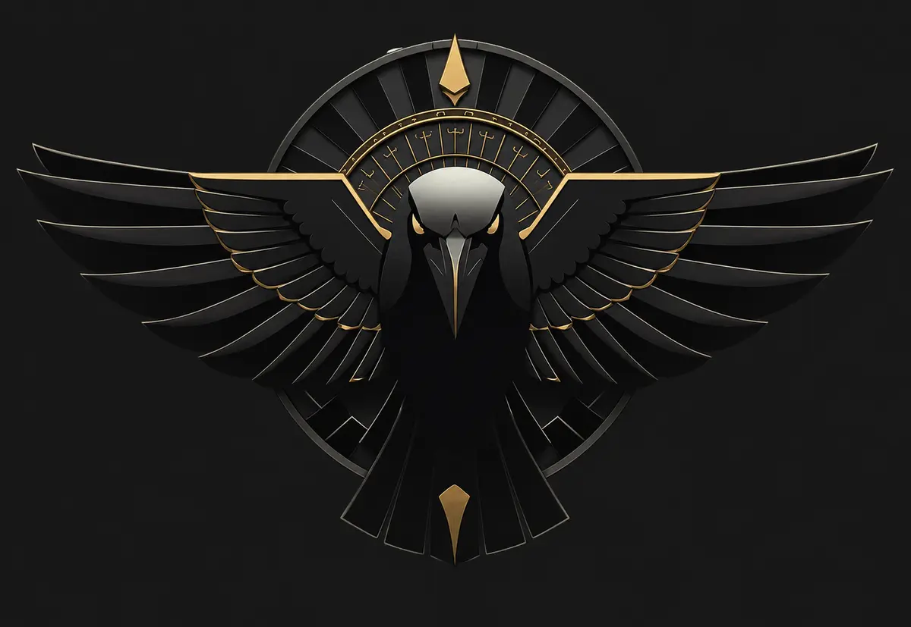
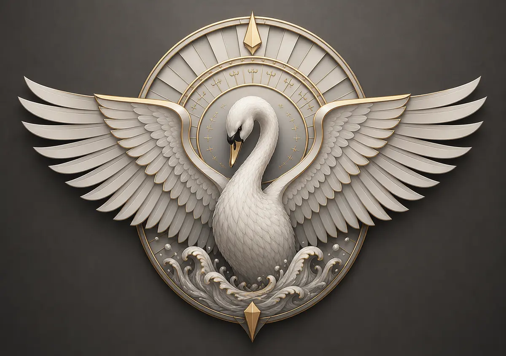
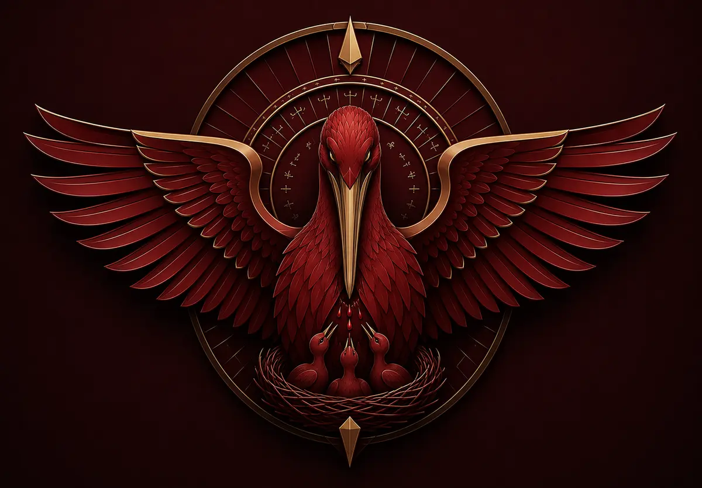

Le texte-source
Ce qui se comprend trop vite ne s'est jamais vraiment compris.
Ce texte ne nomme pas ses sources. Certaines traditions anciennes, disparates dans leur forme mais convergentes dans leur fond, ont depuis longtemps formulé ce qu'il tente de reformuler pour le marché. Nous ne prétendons rien inventer — nous prétendons avoir vérifié, sur des marchés réels et avec du capital réel, que ces lois ne sont pas des métaphores.
Le marché n'est pas chaotique. Il est saturé de signaux — ce n'est pas la même chose. La plupart de ceux qui l'abordent répondent à cette densité par l'agitation : plus de trades, plus d'indicateurs, plus de certitude affichée pour compenser l'absence de certitude réelle. Ce n'est pas une méthode, c'est un symptôme.
Cette conviction n'est pas née d'une lecture. Elle est née d'un compte réel, d'un capital réel, et d'un mécanisme qui referme la porte derrière chaque gain — parce qu'une conviction qui n'a jamais rien coûté n'est encore qu'une opinion.
Ce qui est revendiqué n'est pas la prédiction, mais la reconnaissance : une structure déjà vue mille fois — et le refus d'agir quand elle ne s'est pas encore formée.
Aucune force ne l'emporte durablement sans finir par nourrir celle qui la conteste.
Toute structure stable — un marché, un individu, un système — est le produit d'une tension entre deux forces asymétriques qui ne s'annulent jamais, mais se compensent dans le temps.
Sur le marché, une impulsion qui dépasse durablement son équilibre crée une dette de retour qui se règle tôt ou tard. Sur l'individu, la maîtrise n'est pas l'absence de doute, mais la discipline qui le contient sans le laisser gouverner la décision. Sur le système, chaque degré de liberté gagné se paie d'un degré de protection accepté.

Nigredo
La compression maximale, avant toute résolution.

Albedo
La clarté qui suit, sans supprimer le doute.
Citrinitas
Le discernement devenu stable, plus occasionnel.

Rubedo
La libération — qui redevient un point de départ.
Un équinoxe n'est pas un moment d'équilibre. C'est le point où aucune force ne domine durablement l'autre — l'instant de plus grande sensibilité au changement, jamais un état de repos.
C'est cette instabilité féconde que nos outils cherchent à lire : le moment précis où un biais est sur le point de basculer, sans jamais parier contre une force qui n'a pas encore perdu son ascendant. Entrer trop tôt, c'est confondre la tension avec sa résolution. Entrer trop tard, c'est agir sur une force qui nourrit déjà son contraire.
Un système qui applique une loi doit lui-même en porter la structure. Cinq strates, chacune héritant de celle qui la précède plutôt que la remplaçant :
Ce cycle ne se parcourt pas une fois : la dernière strate nourrit la première à l'itération suivante.
K-Solstice porte, dans sa gestion, ce qui ne se négocie pas : une lecture identique du marché, poussée plus loin.
La Prime de Souveraineté est l'avantage durable né de la possession entière de sa méthode, de ses outils et de son jugement — distinct de toute rente ou de tout privilège accordé de l'extérieur.
Nemini Teneri : ne rien devoir à personne pour la validité de ce qui est avancé, et ne pas répondre à la critique nommée qui cherche l'effet plutôt que la vérité.
Le principe de réserve, enfin, s'étend à toute la communication : Krysopée préfère être trouvée par ceux qui la cherchent véritablement plutôt que rencontrée par ceux qui ne la retiendront pas.
La lecture du marché s'organise en strates de vitesse — une strate courte qui capte l'impulsion, une intermédiaire qui la valide, une longue qui la contient. C'est leur alignement, ou leur désaccord, qui constitue l'information.
Autour de cette lecture, un mécanisme de protection dynamique referme progressivement la porte derrière chaque objectif atteint — jamais avant, jamais de façon statique.
La transmission de cette méthode à un opérateur humain suit la même progression que celle que la méthode observe sur les prix. Ce n'est pas une coïncidence de vocabulaire : c'est une seule cosmologie, appliquée à des échelles différentes.
Ce manifeste n'est pas un aboutissement. Trois productions en traduisent la densité, chacune pour son public :
Glossaire
Le point où aucune force ne domine durablement l'autre — instant de plus grande sensibilité au changement, non un état de repos.
L'instant de compression maximale, avant toute résolution — le plus illisible en apparence, le plus riche en réalité.
La clarté qui suit la compression sans supprimer le doute, mais sans plus s'y soumettre.
Le discernement affiné, la capacité à distinguer le signal du bruit devenue stable plutôt qu'occasionnelle.
La libération de ce qui a été construit — l'aboutissement qui redevient, aussitôt, le point de départ d'un nouveau cycle.
Toute structure stable est le produit d'une tension entre deux forces asymétriques qui ne s'annulent jamais, mais se compensent dans le temps.
L'avantage durable né de la possession entière de sa méthode, de ses outils et de son jugement — distinct de toute rente ou de tout privilège accordé de l'extérieur.
Ne rien devoir à personne pour la validité de ce qui est avancé — et ne pas répondre à la critique nommée qui cherche l'effet plutôt que la vérité.
Principe selon lequel la densité de ce texte-source ne se retrouve jamais intacte dans une production qui en découle sans avoir été réécrite pour son public.
Choix de ne jamais nommer les sources précises convoquées par ce texte, pour laisser au lecteur le soin, s'il le souhaite, de les identifier lui-même.
Témoignage plutôt que démonstration : montrer ce qui a été vérifié et laisser au receveur la responsabilité d'en faire sa propre preuve, sans jamais chercher à retenir sa dépendance.
K-Solstice
Nemini Teneri